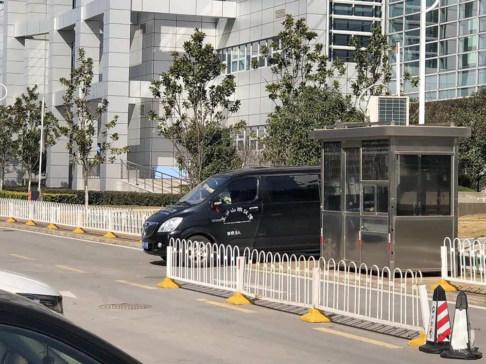
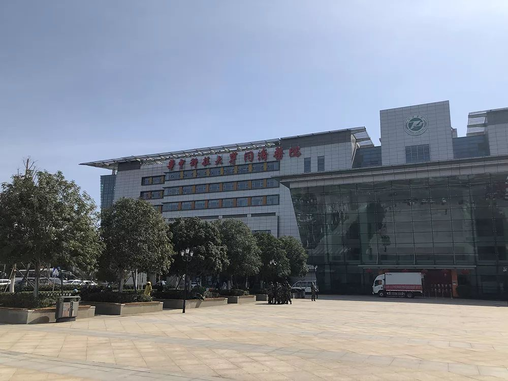

武昌医院院长刘智明患新冠肺炎去世 为首位殉职院长
原文链接 备份链接 【财新网】（记者 高昱 包志明 萧辉）经历了将近一天的抢救后，武汉武昌医院院长刘智明还是在今天（2月18日）上午不幸殉职。武汉市卫健委网站2月18日中午13时发布公告称，武汉市武昌医院党委副书记、院长刘智明同志，在抗 …
澎湃新闻记者 汤琪 廖艳 温潇潇 薛莎莎
实习生 赵雨萌 夏梦洁

接送刘智明遗体的殡仪馆车辆抵达。 澎湃新闻记者 汤琪 图
在殡仪馆的车辆抵达前，不少人保持着沉默，有人时而将口罩取下，擦拭眼泪。
2月18日上午，湖北省卫健委、武汉市卫健委均发布公告称，武汉市武昌医院党委副书记、院长刘智明在抗击新冠肺炎疫情中不幸感染，经全力救治无效，于当日去世，享年51岁。
在抗击新冠肺炎疫情过程中，此前已有7名医护人员以身殉职。
刘智明去世前，他最挂念的仍然是那些与他有过接触的人。
一名现场送别刘智明的同事告诉澎湃新闻，刘院长曾要求大家首先做好防护，他很担心和他有过接触的人。万一别人有事，他会很愧疚。
“送战友”
18日12时许，同济中法新院的门诊楼、住院部周围非常安静，几乎没什么人走动。
然而，就在前一晚，一则关于“武汉市武昌医院院长刘智明因感染新冠肺炎后病情加重，在同济中法新院抢救”的消息，使得这家远离城区的医院成为全社会关注的焦点。
2月18日上午，官方发布宣告刘智明不幸去世的消息。
官方称，疫情发生以来，刘智明不顾个人安危，带领武昌医院全体医务人员奋战在抗疫一线，为武汉市新冠肺炎防控工作作出了重要贡献。
“一世轮回，亦师亦友，来世再见。”得知院长离世的消息后，一名武昌医院的主任医生在朋友圈如是写道。18日，他陪同家属和武昌医院的同事在同济中法新院住院楼外等候送别刘智明。
同事发文悼念的朋友圈截图
在殡仪馆的车辆抵达前，不少人保持着沉默，有人时而将口罩取下，擦拭眼泪。15时许，刘智明的遗体被送上殡仪馆的车，他的家人们相互搀扶着，妻子蔡女士穿着隔离服。车缓缓开动，她边哭边紧跟在车后，直到驶出医院。
“（得知自己染病后）他要我们首先做好防护，他很担心和他接触过的人。要我们不停地相互问一下。”一直守候着的一名武昌医院工作人员告诉澎湃新闻，刘智明染病后一直想询问每一个和他接触过的人，问他们有没有事。他说，万一别人有事，他会很愧疚。
“怎么（人）就走了，都来不及看他最后一眼。他是我们的战友，我只能用‘送战友’（来表达）。”该工作人员哽咽地说道。

家属相互搀扶等待刘智明遗体从医院送出。
与妻共守抗疫一线
刘智明的妻子蔡女士也是抗疫一线的一名医务人员，她是武汉市第三医院光谷院区重症病区护士长。新冠肺炎疫情发生以来，她几乎每天都要在重症病区工作7个小时。
据长江日报此前报道，1月21日，蔡女士接到刘智明的电话，得知武昌医院作为武汉市发热定点医院，要在2天内转运患者，进行院区改造，接收发热患者。她有些担心，因为此前刘智明有些“感冒”，持续低烧了一周，她担心他的身体撑不住。
那时，两人还不知道这次发热就是新冠肺炎的症状。但蔡女士有点担心，也提醒了丈夫，“但他工作太忙了，也没时间顾及这些，而且那时大家警觉性还没有现在这么强。”
1月22日4时，她再次接到刘智明电话，请她帮忙收拾一点换洗衣物送去，因为成为定点医院后他就不能回家了。谁知到了第二天下午，当她再次接到电话时，是被告知刘智明因为患有病毒性肺炎进了重症病区。

刘智明生前在同济医院中法新城院区抢救
上述报道称，刘智明此后的身体状况越来越不好。一度氧饱和低至80。蔡女士曾多次想去照顾刘智明，都被其拒绝。
2月3日，刘智明因为病情危重用上了呼吸机。蔡女士在微信视频时，再次提出要去照顾他。屏幕那头，不能说话的刘智明摇了一下头。
“一个拼命做事的人”
北京某三甲医院神经外科主任医师唐杰（化名）曾经在不少会议上见过刘智明，当时刘智明还是武汉市第三医院的神经外科主任，后调到了武昌医院。
“我们开会都有见过，他是湖北十堰人，个性比较外向，跟人打交道比较多的人。他不光是跟我，包括跟我们很多同行都挺熟的，人也比较豪爽。而且他岁数也不大，比我们也就大两、三岁，按说也不是那种身体不好的年纪。”唐杰对澎湃新闻说。
对于刘智明患上新冠肺炎一事，唐杰透露，“他好像已经被感染挺长一段时间了，只是前一段时间不是那么重，我们听说的是，大概三天前状态都还好。”
刘智明的前同事史艳（化名）称，她今天上午看到很有前同事发朋友圈追悼刘院长，才得知这一消息。史艳对澎湃新闻回忆，刘院长于2015年来到武昌医院工作，时任副院长一职，他一手创立了该院的神经外科。该院原院长退休后，刘智明担任院长一职。
“很多同事评价刘院长是‘一个拼了命做事的人’。”史艳称，刘院长个子很高，很儒雅。他工作起来很认真，待人也温和。
18日下午，前来送别刘智明的除了家属、同事外，还有各级政府部门负责人。国家卫健委副主任于学军、湖北省副省长杨云彦、武汉市长周先旺均到同济中法新院慰问刘智明家属，他们称赞刘智明是“榜样”，是“先锋”，是“英雄”。
戳这里进入
“全国新型冠状病毒感染病例实时地图”↓↓↓

本期编辑 常琛
推荐阅读


原文链接 备份链接 【财新网】（记者 高昱 包志明 萧辉）经历了将近一天的抢救后，武汉武昌医院院长刘智明还是在今天（2月18日）上午不幸殉职。武汉市卫健委网站2月18日中午13时发布公告称，武汉市武昌医院党委副书记、院长刘智明同志，在抗 …
原文链接 备份链接 我就想站在这里，站在第一线，没有为什么。我觉得，我还可以，我能扛住压力，尽快尽多的救治更多的人、更多的小人物。 2月18日上午10:30左右，武汉武昌医院院长、神经外科专家刘智明因新冠肺炎抢救无效，在同济医院中法新城院 …
原文链接 备份链接 1月23日凌晨2点“交通封城”令公布时，张奇还在刷手机。 张奇是北京人。1月20日，他坐高铁到武汉来探望朋友。此前媒体已经零星有了关于武汉新冠肺炎的报道，而病例数据在20日急速增加了2倍，危重患者已经有44人。不 …
原文链接 备份链接 澎湃新闻记者 陈斯斯 “‘我是不是感染了新冠肺炎？’这个是线上问诊出镜率最高的问题。”2月17日，上海市同济医院精神医学科医生刘飞这样告诉澎湃新闻记者。 这些天，同济医院接到了大量的网络、电话和门诊等线上和线下的求助和 …
原文链接 备份链接 图说：年轻时的刘智明（右三）。受访者供图。 记者：何雾 “ 第一位牺牲的武汉医院院长生前事。 ” 每个周末，郧阳地区人民医院（现十堰太和医院）团委书记刘家敏，总是能看到那个叫刘智明的年轻人提前来到职工餐厅，布置晚上舞会 …